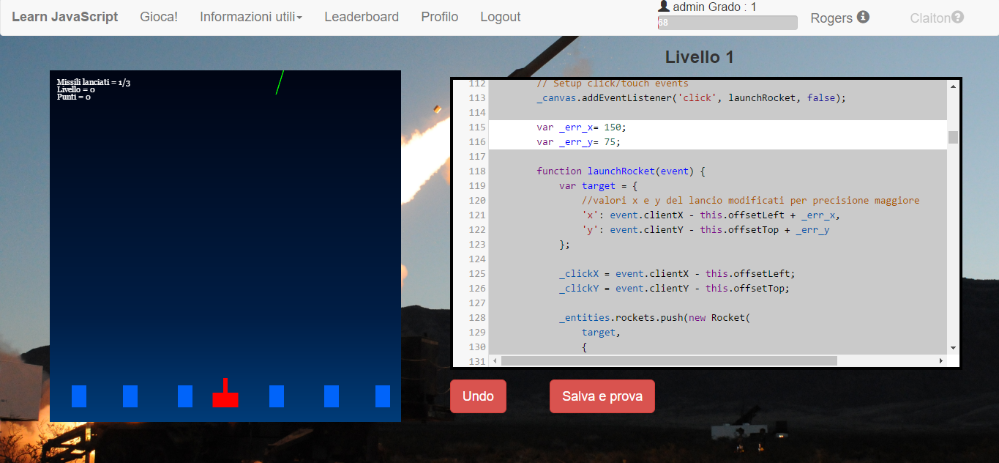
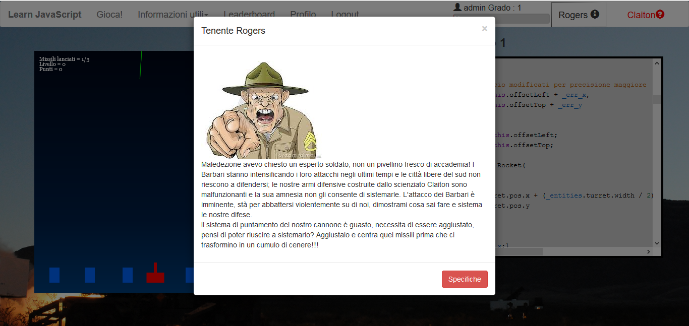
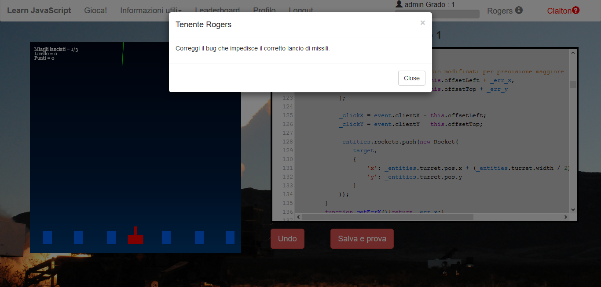
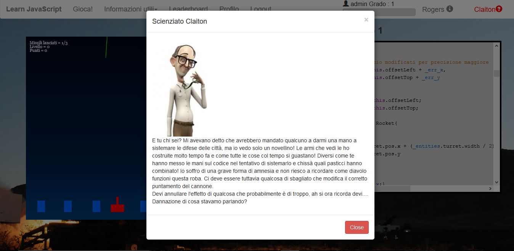

Tutorial
Lo scopo principale di LearnJavaScript è quello di aiutare gli utenti nell'apprendimento del linguaggio di programmazione
JavaScript giocando a Missile Command e ragionando sui principali paradigmi della programmazione base.
Ma la domanda principale è: come funziona questo nuova metodologia di apprendimento basata sul gioco?
LearnJavascript permette agli utenti di imparare a programmare, mettendo loro subito dinanzi ai più classici problemi
della programmazione.
L'utente, quindi, deve individuare il problema sia giocando a Missile Command che a livello di codice e succissivamente
testarlo giocando.

La schermata di gioco principale è suddivisa in due parti: nella parte sinistra troviamo l'arcade di
Missile Command e a destra invece abbiamo l'editor con il sorgente da poter modificare.
Una volta modificato il codice all'interno dell'editor per rendere effettive le nostre modifiche basterà cliccare
sul pulsante sottostante Salva e prova, attraverso il quale verranno apportate le nostre modifiche
a Missile Command.
Se durante l'editing avete sbagliato a scrivere una funzione oppure avete cancellato una parte di codice che si è
rivelata importante, basta premere il bottone Undo attraverso il quale riuscirete a recuperare le modifiche
che avete apportato precedentemente nel codice.
Con l'avanzare dei livelli, le difficoltà aumenteranno sempre più e per tale motivo LearnJavaScript va incontro ai suoi utenti fornendoli di due fedeli aiutanti che li seguiranno durante tutta la loro esperienza.

Il primo aiutante che incontreremo durante il gioco è il valoroso comandante Rogers che, oltre a narrarci gli
avvenimenti, ci fornirà delle informazioni dettagliate riguardanti le azioni che dovremo eseguire sul codice.
Per poter accedere a tali informazioni basta cliccare sul pulsante Specifiche.

 Il secondo (ma non il meno importante) aiutante è lo scienziato Clayton. Clayton nonostante la sua amnesia ci sarà di fondamentale aiuto per capire come avanzare al livello successivo. Clayton non sarà disponibile sin dall'inizio ma basterà attendere un pò di tempo e verremo avvisati della sua disponibilità con una notifica.
Per poter ricorrere all'utilizzo di entrambi gli aiutanti basta recarsi sulla barra dei menù a destra dove appariranno (solamente nella schermata di gioco) i nomi dei due personaggi.
Infine passiamo a descrivere brevemente il gioco Missile Command. Per poter giocare basta recarsi sul mouse sopra al riquadro di gioco.
L'obiettivo è quello di difendere il nostro villaggio dai missili dei barbari attraverso la nostra contraerea.
Per fare fuoco basta fare click sul pulsante sinistro del mouse mirando in un preciso punto dello schermo. Una volta
lanciato, il nostro missile esploderà e se abbiamo mirato bene avremo distrutto un missile avversario.